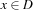
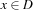
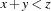
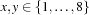
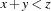
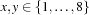
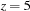
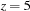
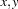
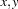

1.1 Basic Concepts
This chapter explains the basic concepts of computation with finite domain constraints in Oz. Further, it explains the implementation of constraints by propagators. For more details see ``Finite Domain Constraint Programming in Oz. A Tutorial.''.
1.1.1 Computation with Constraints in Oz
Basic Constraint
A Basic Constraint takes the form  or , where
or , where  and
and  are variables,
are variables,  is a non-negative integer and
is a non-negative integer and  is a finite domain.
is a finite domain.
Constraint Store
The basic constraints reside in the Constraint Store. Oz provides efficient algorithms to decide satisfiability and entailment for basic constraints.
Propagators
For more expressive constraints, like  , deciding their satisfiability is not computationally tractable. Such non-basic constraints are not contained in the constraint store but are imposed by propagators. A propagator is a computational agent which is imposed on the variables occurring in the corresponding constraint. These variables are called the propagator's parameters. The propagator tries to narrow the domains of the variables it is imposed on by amplifying the store with basic constraints.
, deciding their satisfiability is not computationally tractable. Such non-basic constraints are not contained in the constraint store but are imposed by propagators. A propagator is a computational agent which is imposed on the variables occurring in the corresponding constraint. These variables are called the propagator's parameters. The propagator tries to narrow the domains of the variables it is imposed on by amplifying the store with basic constraints.
Constraint Propagation
This narrowing is called constraint propagation. A propagator  amplifies the store
amplifies the store  by writing a basic constraint
by writing a basic constraint  to it, if
to it, if  entails but on its own does not. If ceases to exist, it is either entailed by the store , or
entails but on its own does not. If ceases to exist, it is either entailed by the store , or  is unsatisfiable. Note that the amount of propagation depends on the operational semantics of the propagator.
is unsatisfiable. Note that the amount of propagation depends on the operational semantics of the propagator.
As an example, assume a store containing  . The propagator for  narrows the domains to  and
. The propagator for  narrows the domains to  and  (since the other values cannot satisfy the constraint). Adding the constraint  causes the propagator to strengthen the store to
(since the other values cannot satisfy the constraint). Adding the constraint  causes the propagator to strengthen the store to  and . Imposing
and . Imposing  lets the propagator narrow the domain of to 1. We say that the propagator constrains the variables  and
lets the propagator narrow the domain of to 1. We say that the propagator constrains the variables  and  .
.
Computation Space
Computation in Oz takes place in so-called computation spaces. For the purpose of the tutorial it is sufficient to consider a computation space as consisting of the constraint store and propagators connected to the store.
1.1.2 Implementation of Propagators
The computational model sketched in Section 1.1.1 is realised by the Oz runtime system, which is implemented by an abstract machine [MM95], called the emulator. In this section, the internal structure of propagators and their interaction with the emulator is explained.
A propagator exists in different execution states and has to be provided with resources like computation time and heap memory by the emulator. A propagator synchronises on the constraint store and may amplify it with basic constraints.
A propagator reads the basic constraints of its parameters. In the process of constraint propagation it writes basic constraints to the store.
The emulator resumes a propagator when the store has been amplified in a way the propagator is waiting for. For example, many propagators will be resumed only in case the bounds of a domain have been narrowed.
Handling Propagators
A propagator is created by the execution of an Oz program. To resume a propagator if one of its parameters is further constrained, one has to attach the propagator somehow to the parameters. To this end, a reference to the propagator is added to so-called suspension lists of the propagator's parameters; we say, a propagator is suspending on its parameters.
A resumed propagator returns a value of the predefined type OZ_Return:
enum OZ_Return {OZ_ENTAILED, OZ_FAILED, OZ_SLEEP}
In order to schedule propagators, the emulator maintains for each propagator an execution state, namely running, runnable, sleeping, entailed, and failed. The emulator's scheduler switches a propagator between the execution states as shown in Figure 1.1.
When a propagator is created, its state is immediately set running and the scheduler allocates a time slice for its first run. After every run, when the constraint propagation was performed, the emulator evaluates the propagator's return value.

The value OZ_FAILED is returned if the propagator (according to its operational semantics) detects its inconsistency with the store. The emulator sets the propagator's execution state to failed and the computation is aborted. The propagator will be ignored by the emulator until it is eventually disposed by the next garbage collection.
The return value OZ_ENTAILED indicates that the propagator has detected its entailment by the constrained store, i. e. it cannot further amplify the constraint store. The emulator sets the propagator's execution state to entailed. It happens the same as for a failed propagator: it will be ignored until it is disposed by garbage collection.
If the propagator can neither detect inconsistency nor entailment, it returns OZ_SLEEP. Because the propagator may amplify the store in the future, it remains in the suspension lists. Its execution state is set to sleeping.
A propagator is resumed when the domain of at least one of its parameters is further narrowed. In this case, the emulator scans the suspension list of that variable and either deletes entries where the propagator's execution state is failed resp. entailed or switches the execution state of the corresponding propagator to runnable. This is indicated by transition (1) in Figure 1.1. Now, the scheduler takes care of the propagator and will schedule it later on (the transition (2) from runnable to running is subject to the scheduler's policy and will be not discussed here).
The parameters of a propagator are stored in its state. Hence, reading and writing of basic constraints is done by the propagator itself. If a propagator constrains a variable according to its operational semantics, it informs the emulator that the corresponding suspension lists have to be scanned.